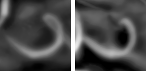

Seventeen lines inside a silver amulet
A house at Jerash, Jordan, collapsed in the earthquake of 749 CE. Inside a lead capsule lay a silver sheet so tightly folded that opening it risked destroying the inscription. The excavators used X-ray computed tomography to unfold it digitally. They described the main script as possibly imitating Arabic and identified several other marks as magical signs. Whether the main script encodes language remains open.
One curve, two lines
In line 6, immediately after an N-shaped sign, a curve meets an upright. The excavators considered لو (law, “if” or “if only”). They also considered a shorter initial stroke that could stand for several undotted Arabic letters. The difference matters because a reader can recognize the curve without knowing which letter precedes it.

Within the line-9 search band, we used the curve alone to select a location, then held that location fixed and checked the upright beside it. On a contrast-enhanced rendering, the curve scored 0.614 in normalized correlation and the neighboring stroke scored 0.174. A score of 1 would mean the same intensity pattern up to a change of brightness and contrast. Bends in the foil and variation in handwriting can lower these scores. This comparison supports recurrence of the curve but supplies too little evidence to read the complete group as a word.
What could establish a reading?
Line 17 places a similar group after a trefoil at the end of the inscription. Reading it as the ordinary conditional “if” would leave the clause unfinished. An independently readable amulet with the trefoil, the group and recognizable neighboring signs in the same order could distinguish a written formula from a sequence of ritual marks.
Sources and evidence
- Barfod and colleagues, excavation and first digital unfolding
- Larsen and colleagues, proposed readings, printed p. 378
- Baum and colleagues, revised unfolding
Research notes and comparison scripts
Cite this page
Daniel Bourdeau, “A curve on the Jerash silver scroll”, Cyphersolver, posted 22 November 2026, repository commit fa8c165345, https://cyphersolver.com/jerash749.html.